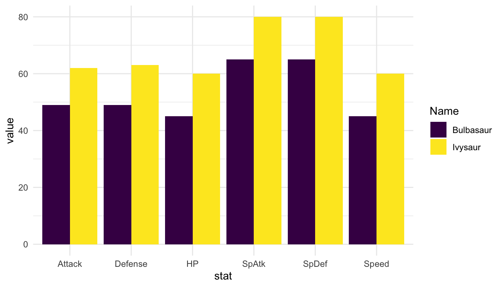
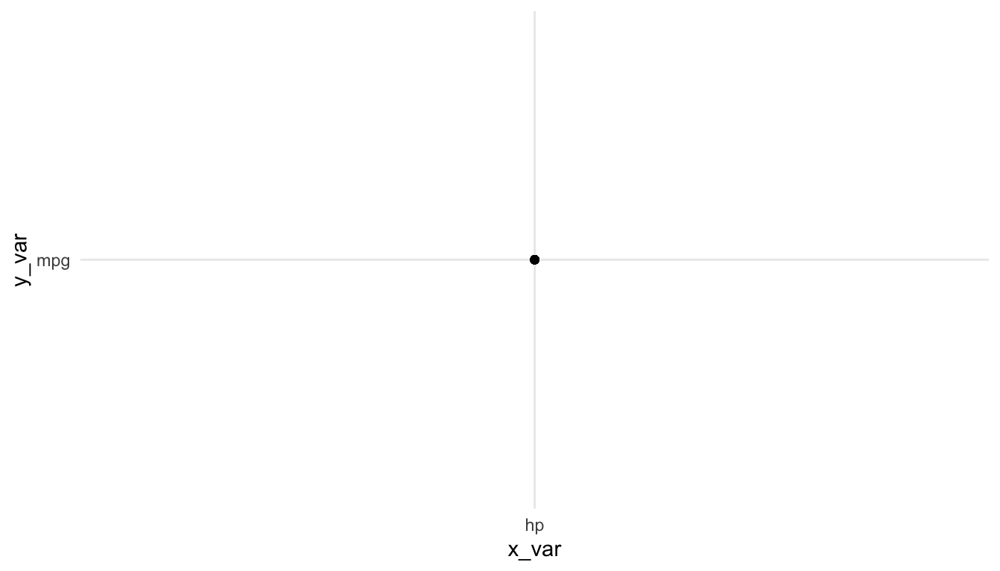
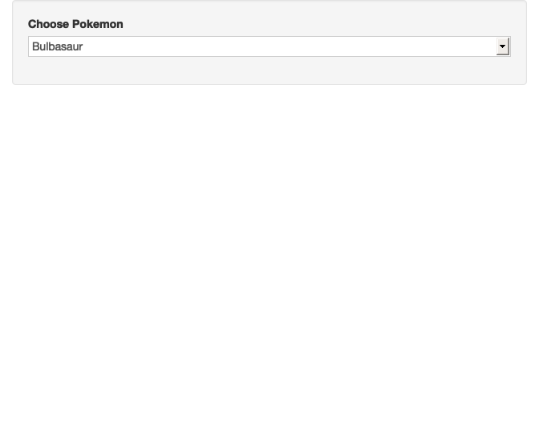

library(tidyverse)
theme_set(theme_minimal())
atp_df <- read_csv("https://raw.githubusercontent.com/JeffSackmann/tennis_atp/master/atp_matches_2023.csv")
wta_df <- read_csv("https://raw.githubusercontent.com/JeffSackmann/tennis_wta/master/wta_matches_2023.csv")
both_df <- bind_rows(atp_df, wta_df)
both_long <- both_df |> pivot_longer(c(winner_name, loser_name))
## only keep players who have player over 50 matches
both_n50 <- both_long |> group_by(value) |> summarise(n = n()) |>
filter(n > 50)
## construct various statistics
major_tennis <- semi_join(both_long, both_n50, by = c("value"))
major_tennis <- major_tennis |> mutate(w_svperc = 100 * w_1stIn / w_svpt,
l_svperc = 100 * l_1stIn / l_svpt,
w_firstwon = 100 * w_1stWon / w_1stIn,
l_firstwon = 100 * l_1stWon / l_1stIn,
w_secondwon = 100 * w_2ndWon / (w_svpt - w_1stIn),
l_secondwon = 100 * l_2ndWon / (l_svpt - l_1stIn))15 Shiny Reactivity
Working with shiny can be difficult at first because we need to think about how code is run a bit differently. In .rmd, .qmd, and .R files, code is run from beginning to end. This makes debugging relatively simple: we run code line by line until we get an error. Then, we try to understand why the code gives an error.
On the other hand, code in a shiny app does not run from beginning to end. Instead, code is run through a process called reactive execution. We will explore this concept by making reactive graphs. We will begin this section with a reading from the Mastering Shiny book and then delve into more examples.
15.1 Basic Reactivity (Class Prep)
Read Sections 3.1 through 3.3 in the Basic Reactivity Chapter of Mastering Shiny
Exercise 1. 3.3.6 Exercise 1 in Mastering Shiny.
Exercise 2. 3.3.6 Exercise 2 in Mastering Shiny. You do not need to submit your sketches but you should bring them to class.
15.2 Another Example Tennis App
The purpose of this section is to complete another example with a different data set, continuing to strengthen our conceptual understanding of reactivity. We will use a couple of tennis data sets obtained from https://github.com/JeffSackmann/tennis_atp and https://github.com/JeffSackmann/tennis_wta to create an app that lets us create a histogram of a summary statistic of our choosing for a player of our choosing. Constructing this app will cover another common use case: allowing a user to choose a variable from a data set to plot.
Again, a usual first step is creating a static graph, choosing a value for each future interactive input. Begin by reading in the data and doing a bit of preparatory work. To focus on shiny, we will skip discussion of this work, but all of it are functions you should recognize.
The next chunk of code is needed to put the various statistics into one column. This is an issue because, in major_tennis, there is a column for w_ace (aces for the winner) and l_ace (aces for the loser). We need those in one column, aces, that have the number of aces for the player. Looking back, this is not the most efficient way we could do this. If we were to do it again, we could do an across() combined with if_else() where the new variables would take the w_.... values if the player was the winner and the l_.... values if the player was the loser.
major_tennis_w <- major_tennis |> filter(name == "winner_name")
major_tennis_l <- major_tennis |> filter(name == "loser_name")
w_small <- major_tennis_w |> select(value, winner_seed, w_ace, w_df,
w_svperc, w_firstwon, w_secondwon) |>
rename(seed = winner_seed, ace = w_ace, df = w_df, svperc = w_svperc,
firstwon = w_firstwon, secondwon = w_secondwon)
l_small <- major_tennis_l |> select(value, loser_seed, l_ace, l_df,
l_svperc, l_firstwon, l_secondwon) |>
rename(seed = loser_seed, ace = l_ace, df = l_df, svperc = l_svperc,
firstwon = l_firstwon, secondwon = l_secondwon)
df <- bind_rows(w_small, l_small) |>
rename(player = "value")
df
#> # A tibble: 3,637 × 7
#> player seed ace df svperc firstwon secondwon
#> <chr> <dbl> <dbl> <dbl> <dbl> <dbl> <dbl>
#> 1 Taylor Fritz 3 15 2 61.2 86.5 48.5
#> 2 Frances Tiafoe NA 3 1 70.4 78.9 37.5
#> 3 Taylor Fritz 3 11 0 62.5 88 63.3
#> 4 Frances Tiafoe NA 5 4 60.7 83.8 45.8
#> 5 Stefanos Tsitsipas 1 9 1 53.1 82.7 60.9
#> 6 Lorenzo Musetti NA 2 1 61.0 72 75
#> # ℹ 3,631 more rowsNow, we have our five variables (ace, df, svperc, firstwon, and secondwon). We want an app that lets that user make a histogram of one of these variables for a player of their choosing.
We will try to use a similar workflow for this problem as we did for the majors app.
Step 1: Make a histogram of one variable for one specific player.
Step 2: Set up our shiny app inputs. Before, we just had a single input. Now, we will have two: one for player and one for variable. Let’s focus on one at a time, doing player first. Type shinyapp and click on the R Studio snippet to bring up a base app.
Step 3: Now that we have one of our inputs in the UI, let’s work on the server. First, we will ignore the input$ selector and put in our graph from step 1. We again use the plotOutput(), renderPlot({}) combination.
Step 4: Now we want to connect the input defined in the UI to the server so that the graph changes depending on which player we select.
Step 5: Now we repeat some of these steps for a second input: a variable that the user selects. We will use radioButtons() as the input in the UI.
We will discuss why we need to take some extra steps to perform the “user can select a variable” operation in class. In particular, we will need to briefly discuss tidy evaluation to use some of the tidyverse functions in shiny.
Step 6: Finally, we will add a third input that will let the user change the number of bins in the histogram.
Step 7: Use the glue() function from the glue package to change the title of the histogram to include the name of the player in the plot.
Exercise 1. If we move the output$name_of_histogram <- .... code to the very beginning of the server function, do you think the app will still run? Give a reason.
Exercise 2. Draw the reactive graph for the Tennis app. Make sure to include all inputs, outputs, and reactive expressions in your graph.
Exercise 3. Sketch the reactive graph for the majors app in the previous section. Make sure to include all inputs, outputs, and reactive expressions in your graph.
15.3 Your Turn
Exercise 1. In the tennis app, change the histogram input from a sliderInput() to a numericInput().
Exercise 2. In the tennis app, change the histogram input back to sliderinput(). Then, apply 2.2.8 Exercise 3 in the Mastering Shiny book to the tennis app slider.
Exercise 3. Add an additional input or output (or both!) to the Tennis App. You can decide what you want to add here!
15.4 Other Useful Things for shiny
15.4.1 Tidy Evaluation
When using some tidyverse functions inside of a function environment, there are some issues in that we are mixing two different types of “variables” in R. In particular,
- an environmental variable is something created using
<-. Theinput$name_of_varare environmental variables. - a data variable is a variable that is inside of a data frame.
The same issues encountered with tidy evaluation in shiny are also encountered in more generic functions. Let’s examine this issue in functions first, as it’s a little bit quicker to see what’s happening (as opposed to shiny, where we have to run the entire app). But, keep in mind that the server part of shiny is a function itself, so we will have all of these same issues.
The following are some toy functions performing various tasks on the mtcars data. Which ones work how you expect? Which ones do not?
subset_by_cyl <- function(cyl_val) {
mtcars |> filter(cyl == cyl_val)
}
subset_by_cyl(cyl_val = 8)
#> mpg cyl disp hp drat wt qsec vs am gear carb
#> Hornet Sportabout 18.7 8 360.0 175 3.15 3.440 17.02 0 0 3 2
#> Duster 360 14.3 8 360.0 245 3.21 3.570 15.84 0 0 3 4
#> Merc 450SE 16.4 8 275.8 180 3.07 4.070 17.40 0 0 3 3
#> Merc 450SL 17.3 8 275.8 180 3.07 3.730 17.60 0 0 3 3
#> Merc 450SLC 15.2 8 275.8 180 3.07 3.780 18.00 0 0 3 3
#> Cadillac Fleetwood 10.4 8 472.0 205 2.93 5.250 17.98 0 0 3 4
#> Lincoln Continental 10.4 8 460.0 215 3.00 5.424 17.82 0 0 3 4
#> Chrysler Imperial 14.7 8 440.0 230 3.23 5.345 17.42 0 0 3 4
#> Dodge Challenger 15.5 8 318.0 150 2.76 3.520 16.87 0 0 3 2
#> AMC Javelin 15.2 8 304.0 150 3.15 3.435 17.30 0 0 3 2
#> Camaro Z28 13.3 8 350.0 245 3.73 3.840 15.41 0 0 3 4
#> Pontiac Firebird 19.2 8 400.0 175 3.08 3.845 17.05 0 0 3 2
#> Ford Pantera L 15.8 8 351.0 264 4.22 3.170 14.50 0 1 5 4
#> Maserati Bora 15.0 8 301.0 335 3.54 3.570 14.60 0 1 5 8
subset_by_cyl(cyl_val = "8")
#> mpg cyl disp hp drat wt qsec vs am gear carb
#> Hornet Sportabout 18.7 8 360.0 175 3.15 3.440 17.02 0 0 3 2
#> Duster 360 14.3 8 360.0 245 3.21 3.570 15.84 0 0 3 4
#> Merc 450SE 16.4 8 275.8 180 3.07 4.070 17.40 0 0 3 3
#> Merc 450SL 17.3 8 275.8 180 3.07 3.730 17.60 0 0 3 3
#> Merc 450SLC 15.2 8 275.8 180 3.07 3.780 18.00 0 0 3 3
#> Cadillac Fleetwood 10.4 8 472.0 205 2.93 5.250 17.98 0 0 3 4
#> Lincoln Continental 10.4 8 460.0 215 3.00 5.424 17.82 0 0 3 4
#> Chrysler Imperial 14.7 8 440.0 230 3.23 5.345 17.42 0 0 3 4
#> Dodge Challenger 15.5 8 318.0 150 2.76 3.520 16.87 0 0 3 2
#> AMC Javelin 15.2 8 304.0 150 3.15 3.435 17.30 0 0 3 2
#> Camaro Z28 13.3 8 350.0 245 3.73 3.840 15.41 0 0 3 4
#> Pontiac Firebird 19.2 8 400.0 175 3.08 3.845 17.05 0 0 3 2
#> Ford Pantera L 15.8 8 351.0 264 4.22 3.170 14.50 0 1 5 4
#> Maserati Bora 15.0 8 301.0 335 3.54 3.570 14.60 0 1 5 8
plot_mtscatter <- function(x_var, y_var) {
ggplot(data = mtcars, aes(x = x_var, y = y_var)) +
geom_point() +
theme_minimal()
}
plot_mtscatter(x_var = "hp", y_var = "mpg")
sort_mtcars <- function(var_sort) {
mtcars |> arrange(var_sort)
}
sort_mtcars(var_sort = "mpg")
#> mpg cyl disp hp drat wt qsec vs am gear carb
#> Mazda RX4 21.0 6 160.0 110 3.90 2.620 16.46 0 1 4 4
#> Mazda RX4 Wag 21.0 6 160.0 110 3.90 2.875 17.02 0 1 4 4
#> Datsun 710 22.8 4 108.0 93 3.85 2.320 18.61 1 1 4 1
#> Hornet 4 Drive 21.4 6 258.0 110 3.08 3.215 19.44 1 0 3 1
#> Hornet Sportabout 18.7 8 360.0 175 3.15 3.440 17.02 0 0 3 2
#> Valiant 18.1 6 225.0 105 2.76 3.460 20.22 1 0 3 1
#> Duster 360 14.3 8 360.0 245 3.21 3.570 15.84 0 0 3 4
#> Merc 240D 24.4 4 146.7 62 3.69 3.190 20.00 1 0 4 2
#> Merc 230 22.8 4 140.8 95 3.92 3.150 22.90 1 0 4 2
#> Merc 280 19.2 6 167.6 123 3.92 3.440 18.30 1 0 4 4
#> Merc 280C 17.8 6 167.6 123 3.92 3.440 18.90 1 0 4 4
#> Merc 450SE 16.4 8 275.8 180 3.07 4.070 17.40 0 0 3 3
#> Merc 450SL 17.3 8 275.8 180 3.07 3.730 17.60 0 0 3 3
#> Merc 450SLC 15.2 8 275.8 180 3.07 3.780 18.00 0 0 3 3
#> Cadillac Fleetwood 10.4 8 472.0 205 2.93 5.250 17.98 0 0 3 4
#> Lincoln Continental 10.4 8 460.0 215 3.00 5.424 17.82 0 0 3 4
#> Chrysler Imperial 14.7 8 440.0 230 3.23 5.345 17.42 0 0 3 4
#> Fiat 128 32.4 4 78.7 66 4.08 2.200 19.47 1 1 4 1
#> Honda Civic 30.4 4 75.7 52 4.93 1.615 18.52 1 1 4 2
#> Toyota Corolla 33.9 4 71.1 65 4.22 1.835 19.90 1 1 4 1
#> Toyota Corona 21.5 4 120.1 97 3.70 2.465 20.01 1 0 3 1
#> Dodge Challenger 15.5 8 318.0 150 2.76 3.520 16.87 0 0 3 2
#> AMC Javelin 15.2 8 304.0 150 3.15 3.435 17.30 0 0 3 2
#> Camaro Z28 13.3 8 350.0 245 3.73 3.840 15.41 0 0 3 4
#> Pontiac Firebird 19.2 8 400.0 175 3.08 3.845 17.05 0 0 3 2
#> Fiat X1-9 27.3 4 79.0 66 4.08 1.935 18.90 1 1 4 1
#> Porsche 914-2 26.0 4 120.3 91 4.43 2.140 16.70 0 1 5 2
#> Lotus Europa 30.4 4 95.1 113 3.77 1.513 16.90 1 1 5 2
#> Ford Pantera L 15.8 8 351.0 264 4.22 3.170 14.50 0 1 5 4
#> Ferrari Dino 19.7 6 145.0 175 3.62 2.770 15.50 0 1 5 6
#> Maserati Bora 15.0 8 301.0 335 3.54 3.570 14.60 0 1 5 8
#> Volvo 142E 21.4 4 121.0 109 4.11 2.780 18.60 1 1 4 2
select_mtcars <- function(var_select) {
mtcars |> select(var_select)
}
select_mtcars(var_select = "mpg")
#> mpg
#> Mazda RX4 21.0
#> Mazda RX4 Wag 21.0
#> Datsun 710 22.8
#> Hornet 4 Drive 21.4
#> Hornet Sportabout 18.7
#> Valiant 18.1
#> Duster 360 14.3
#> Merc 240D 24.4
#> Merc 230 22.8
#> Merc 280 19.2
#> Merc 280C 17.8
#> Merc 450SE 16.4
#> Merc 450SL 17.3
#> Merc 450SLC 15.2
#> Cadillac Fleetwood 10.4
#> Lincoln Continental 10.4
#> Chrysler Imperial 14.7
#> Fiat 128 32.4
#> Honda Civic 30.4
#> Toyota Corolla 33.9
#> Toyota Corona 21.5
#> Dodge Challenger 15.5
#> AMC Javelin 15.2
#> Camaro Z28 13.3
#> Pontiac Firebird 19.2
#> Fiat X1-9 27.3
#> Porsche 914-2 26.0
#> Lotus Europa 30.4
#> Ford Pantera L 15.8
#> Ferrari Dino 19.7
#> Maserati Bora 15.0
#> Volvo 142E 21.4We will spend a little time fixing the code that does not work.
15.4.2 glue::glue()
The glue() function from the glue package is really useful for making plot titles, axis titles, etc. that depend on variables you have made. For example, you might want a title for ggplot2 to change depending on which input a user selects.
It’s a fairly simple function: you just put together text in " " and variable names, separated by commas.
poke_df <- read_csv(here::here("data/pokemon_full.csv"))
poke_long <- poke_df |> pivot_longer(4:9, values_to = "value",
names_to = "stat")
poke_small <- poke_long |>
filter(Name == "Bulbasaur" | Name == "Ivysaur")
ggplot(data = poke_small, aes(x = stat, y = value)) +
geom_col(aes(fill = Name), position = "dodge") +
scale_fill_viridis_d()
library(shiny)
ui <- fluidPage(
sidebarLayout(
sidebarPanel(
selectizeInput("pokechoose1", label = "Choose Pokemon",
choices = poke_df$Name, selected = "Bulbasaur")
),
mainPanel(
plotOutput(outputId = "pokegraph")
)
)
)
server <- function(input, output, session) {
output$pokegraph <- renderPlot({
poke_react <- poke_long |> filter(Name %in% input$pokechoose1)
ggplot(data = poke_react, aes(x = stat, y = value)) +
geom_point() +
geom_segment(aes(xend = stat, y = 0, yend = value)) +
coord_flip() +
labs(title = glue::glue("Graph of the Stats for", input$pokechoose1))
})
}
shinyApp(ui, server)
15.4.4 Using if and else
If we want our app do do something completely different when a user changes an input, we might consider using if and else. If we have time in class, we will do an example in Shiny: if an input is equal to some value, do something or make a certain plot; else make a different type of plot. Below is an example of the syntax in base R:
x <- 5
if (x < 10) {
x * 2
} else {
x / 2
}
#> [1] 10
15.4.5 source() and write_csv()
Important
For shiny apps, if there is a lot of data preparation before the data is ready for the shiny app, it is generally best to put this data preparation in a different R script.
You can then either source() the data preparation file (which runs all of the code in the file that is sourced) or you can use write_csv() to write the prepped data to its own .csv file. You would then use read_csv() on this new file in the app.R file with your shiny app.